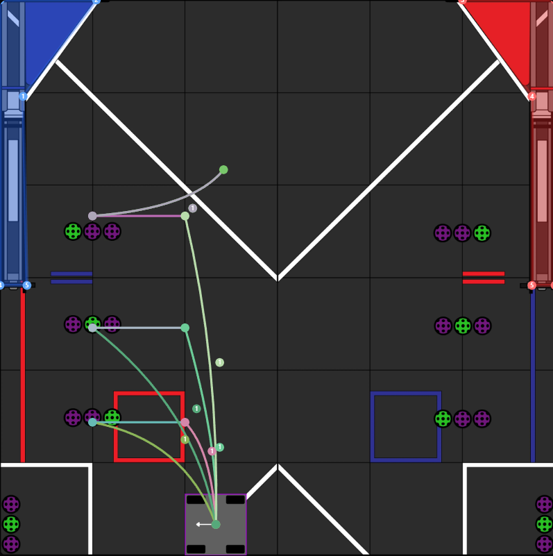

From sensors to calculations - The evolution of precision in V3
Transitioned to a calculation-based system instead of sensors: Completely removed the Sorter + Push Servo and replaced them with a Gate System that only opens when the shooter reaches the required RPM.
Used Odometry to accurately calculate the robot's position and distance to the target using (x, y) coordinates.
A PID (Proportional-Integral-Derivative) controller maintains constant RPM. It relies on three coefficients: Kp (current error), Ki (accumulated errors), and Kd (rate of change).

The aiming and tracking system in V3 relies on integrating Odometry with precise mathematical equations to calculate the aiming angle and shooter speed based on the robot and target positions.